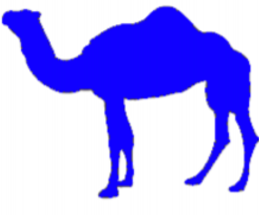

<-- Kembali ke Portal Tugas
Table Example: Spanning Rows and Columns
A more complex sample table
|  |
camelid comparison approximate as of 6/2011 |
| # of Humps |
Indigenous Region |
Spits? |
Produces wool ? |
| Camels (bactrian) |
2 |
Africa/asia |
Yes |
Yes |
| Llamas |
1 |
Andes Mountain |
Yes |
Yes |